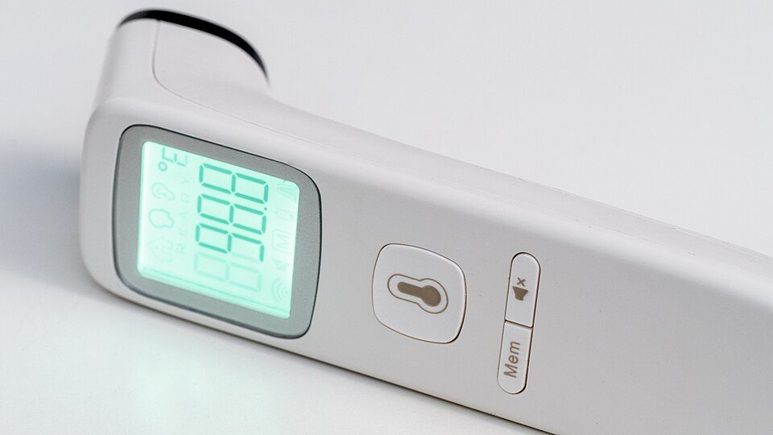

Información divulgativa. No sustituye la valoración de tu equipo médico ni sirve para decidir un tratamiento.

.jpg){kind=link}
Antes de empezar
Pide a tu equipo por escrito:
- El teléfono al que llamar en horario de consulta y fuera de horario (muchos hospitales tienen un teléfono de enfermería oncológica o un hospital de día con atención telefónica).
- Qué tratamiento recibes exactamente y cuándo.
- Qué hacer si tienes fiebre.
Lleva siempre contigo un informe o una tarjeta con tu tratamiento. Si acudes a urgencias, enséñalo: no es lo mismo una fiebre en una persona en quimioterapia que en otra.
Esta página es una orientación general. Siguen mandando las indicaciones de tu equipo, que conoce tu tratamiento.
Llama o ve a urgencias en el momento
- Fiebre de 38 °C o más, o escalofríos, durante la quimioterapia: puede ser una neutropenia febril (infección con defensas bajas), que necesita valoración urgente aunque te encuentres bien. No tomes antitérmicos para «ver si baja» antes de llamar.
- Falta de aire, dolor en el pecho o hinchazón brusca de una pierna (posible trombosis).
- Sangrado que no para, vómitos con sangre o heces negras.
- Confusión, somnolencia intensa, desmayo o convulsiones.
- Vómitos o diarrea que no te dejan beber ni retener la medicación durante más de 24 horas, o con mareo al levantarte.
- Dolor de espalda nuevo con debilidad en las piernas o pérdida del control de la orina o las heces.
- Reacción durante la infusión: picor intenso, ronchas, hinchazón de la cara o dificultad para respirar.
Comenta en el día
- Diarrea (más de cuatro deposiciones al día por encima de lo habitual), sobre todo con inmunoterapia, porque puede ser una colitis que necesita tratamiento.
- Tos nueva o fatiga al respirar con inmunoterapia (posible neumonitis).
- Llagas en la boca que impiden comer.
- Erupción extensa o que forma ampollas.
- Ojos o piel amarillos, orina muy oscura.
- Dolor mal controlado con la medicación pautada.
- Enrojecimiento, dolor o supuración en el catéter o el reservorio.
Puede esperar a la próxima consulta
- Cansancio que te deja hacer tus cosas, aunque más despacio.
- Náuseas leves que se controlan con la medicación.
- Caída del pelo, uñas frágiles, piel seca.
- Hormigueos leves en manos o pies (coméntalos, porque pueden obligar a ajustar la dosis).
- Dudas sobre la dieta, el trabajo o el ejercicio.
Si dudas, llama. Nadie en oncología se molesta por una llamada que resulta no ser grave, y una consulta a tiempo evita complicaciones.
La inmunoterapia es distinta
Sus efectos secundarios son inflamaciones de cualquier órgano (intestino, pulmón, hígado, tiroides, piel) y pueden aparecer semanas o meses después de una dosis, incluso tras terminar el tratamiento. Avisa siempre de que recibes o recibiste inmunoterapia.
Ver también: Efectos secundarios, Dolor y otros síntomas, Inmunoterapia.
Fuentes
- Klastersky J, et al. Management of febrile neutropaenia: ESMO Clinical Practice Guidelines. Ann Oncol. 2016;27(suppl 5):v111-v118. doi:10.1093/annonc/mdw325
- Haanen J, et al. Management of toxicities from immunotherapy: ESMO Clinical Practice Guideline. Ann Oncol. 2022;33:1217-1238. doi:10.1016/j.annonc.2022.10.001
- National Cancer Institute. Chemotherapy and you (en inglés). cancer.gov